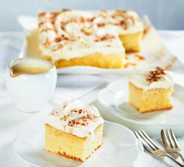

Tres Leches Cake Recipe

Description
A classic Mexican tres leches cake, also known as milk cake.
Ingredients
- flavourless oil, for the tin
- 4 eggs, separated
- 200g caster sugar
- 1 tsp vanilla extract
- 200g plain flour
- 1 tsp baking powder
- 100ml milk
- 410g can evaporated milk
- 200ml sweetened condensed milk
- 300ml double cream
- 2 tbsp icing sugar
- pinch cinnamon
Steps
- Heat oven to 180C/160C fan/gas 4. Lightly oil and line the base and sides of a 20cm square cake tin.
- Put the egg whites in a large bowl with a pinch of salt. Beat with an electric hand whisk until foamy, about 3 mins. Keep mixing while you add 150g of the sugar, a spoonful at a time, until thick and glossy.
- In another bowl, mix the egg yolks, remaining sugar and vanilla (no need to clean the beaters first) for 2 mins, or until pale and foamy. Add the flour, baking powder and milk to the egg yolks, and use a spatula to fold everything together.
- Add a large spoonful of egg white to the cake mix, beat together to loosen the mixture, then gently fold through the remaining egg whites with a large metal spoon (being careful not to over-stir so you don’t knock out too much air), until you have a smooth batter.
- Pour into the tin, smooth the top and bake for 40-45 mins until a skewer inserted into the centre comes out clean. Mix together the evaporated milk, condensed milk and 3 tbsp of the cream.
- Leave the cake to cool for 10 mins in the tin, then ease a knife around the sides. Poke holes over the surface with a skewer, then pour over half the milk mixture. After 5 mins or so, most of it should have soaked into the cake. Leave for another 5 mins, then transfer to a plate and pour over some of the remaining milk until it starts to leak a little. (Any leftover milk that won’t soak into the cake can be served on the side.) Leave to cool.
- Whip the remaining cream and icing sugar together until holding soft peaks. Spread the cream over the cake and sprinkle with a little cinnamon. Can be made and chilled a day ahead. Serve in squares with any remaining soaking milk.